本章回顾
我们来回顾一下 😌
- 软件包工具 🔧 是
- dpkg
- apt
- dpkg
- 查看
- dpkg --list | grep cmatrix
- 卸载
- dpkg -r cmatrix
- 查看
- apt
- 查询
- search
- 详细查询
- show
- 下载
- install
- 更新源
- update
- 升级软件
- upgrade
- 删除
- remove
- 查询
- 还有个专门管理软件包的
- aptitude
- 下次玩什么呢？🤔
牛说
- 这次我们下载个牛说
- cowsay：
sudo apt install cowsay
- cowsay 牛说
- cow 就是牛 🐄
- say 就是说 🗣
- cowsay 就是牛说
- 牛说的东西作为参数给 cowsay
cowsay oeasy
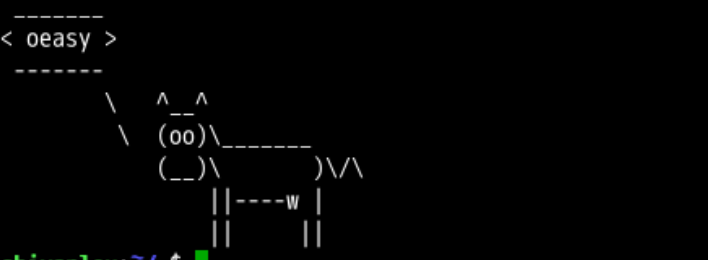
- 还有什么好玩的呢？👁
- 我们查查手册！📕
表情
cowsay -p oeasy
cowsay -s oeasy
cowsay -e *- oeasy
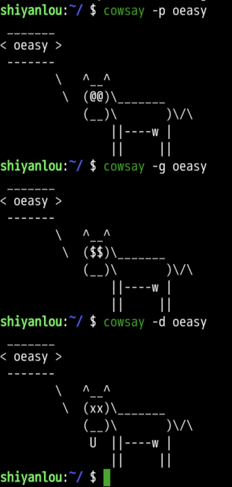
更多表情
-b极简主义 Borg Mode-d死亡状态 dead-g贪婪金钱 greedy-p偏执狂 paranoia-s石化 stone-w紧张睁大眼 wired-t闭眼的-e设置眼睛 eye 字符 后面眼睛字符
cowthink
- 除了 cowsay 之外
- cowthink 也可以使用
cowthink -p oeasy
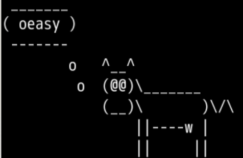
- cowsay 牛不但能说
- 而且能思考
- 昆丁也感觉很牛啊
不同动物 🐫
- 我们先列出所有动物
- 先按下cowsay -f 然后按下tab
- 就可以列出所有的动物
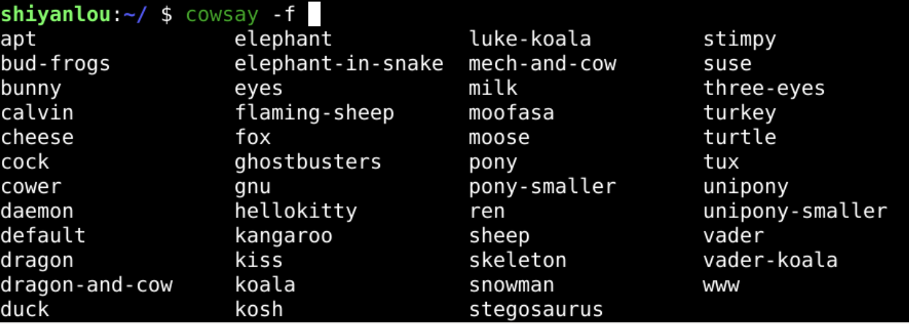
- 这些动物存放在哪里呢？
列出所有动物
- 使用
-l列出 list
cowsay -l
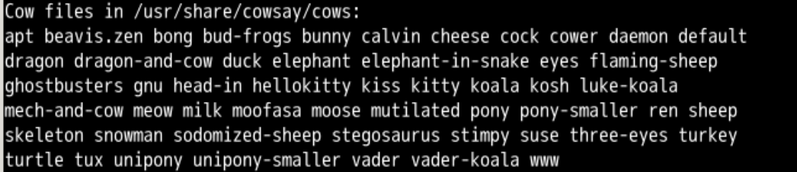
cowsay -f apt oeasy
让动物说出自己的名字！🐑
cowsay -l|sed "s/ /\n/g"|xargs -I {} cowsay {} {}
- 这个用法有点复杂
- 我们可以一段段地来执行这个代码
- 很有意思的
内容太长
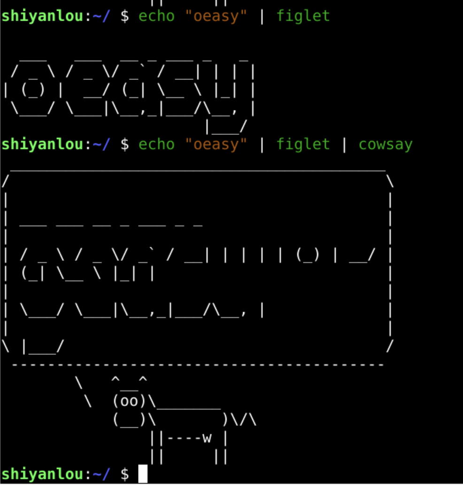
- 有时候屏幕会乱掉
- 查询一下手册
查询
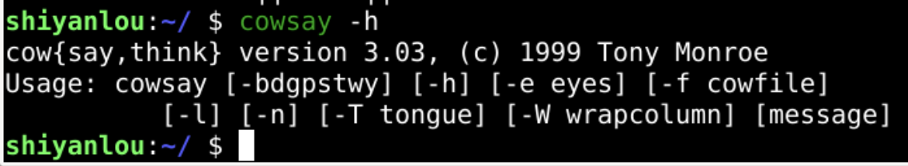
- -W 80
- 可以保障正确换行么？
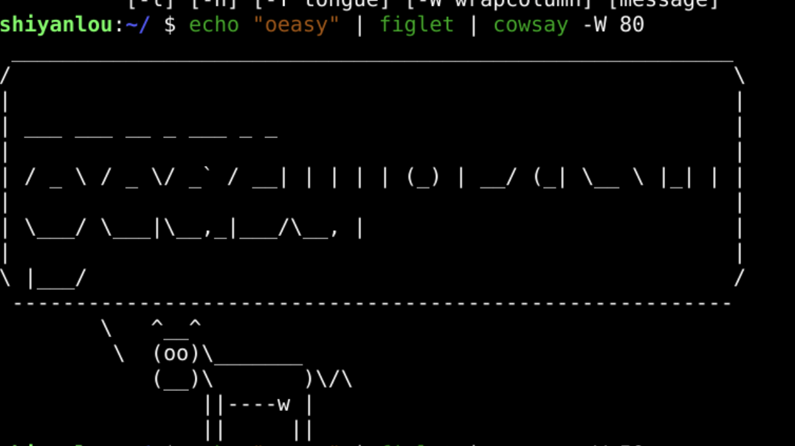
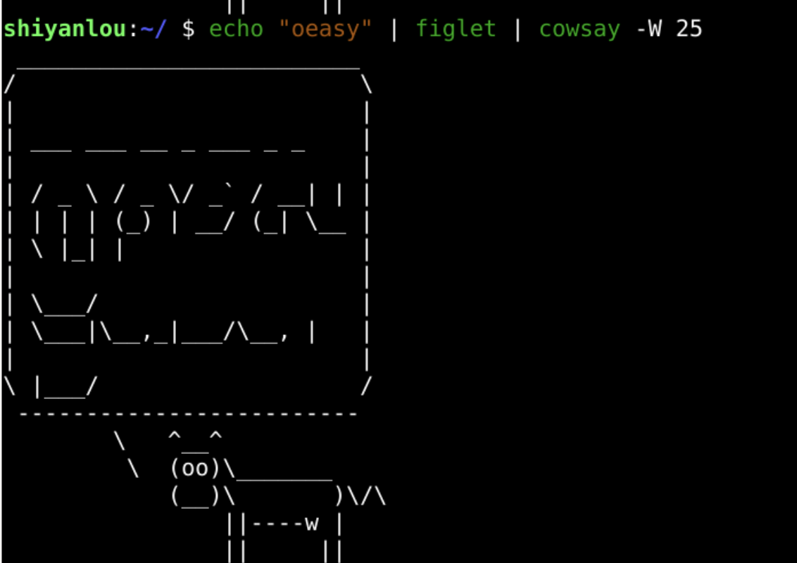
- 列宽可以设置
- 但是无法保证正常使用
查文档
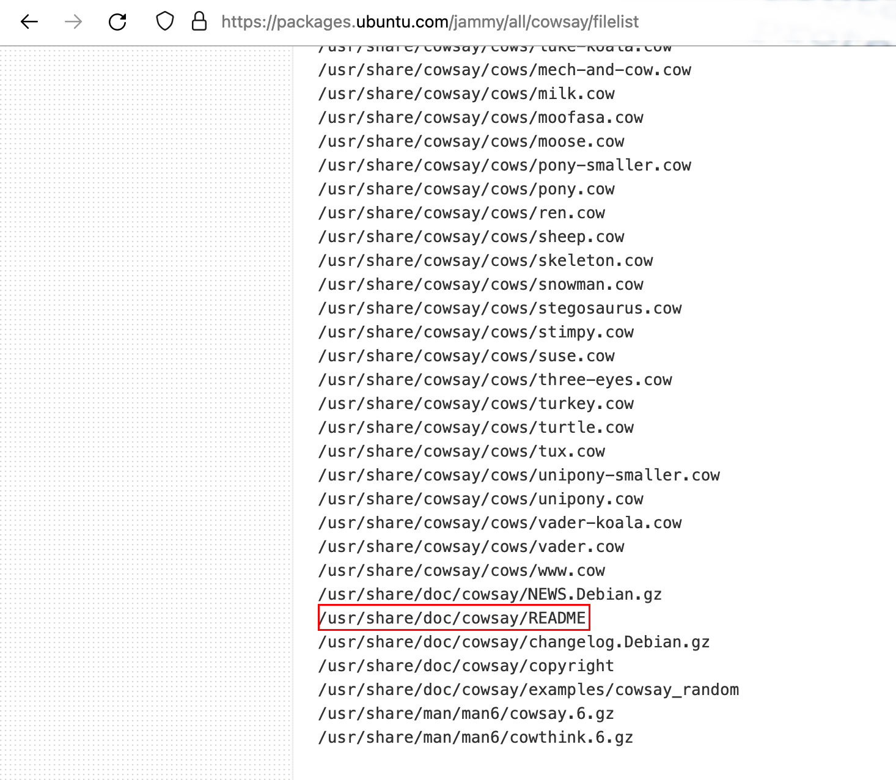
- 仿佛抓住一根救命稻草
一言难尽
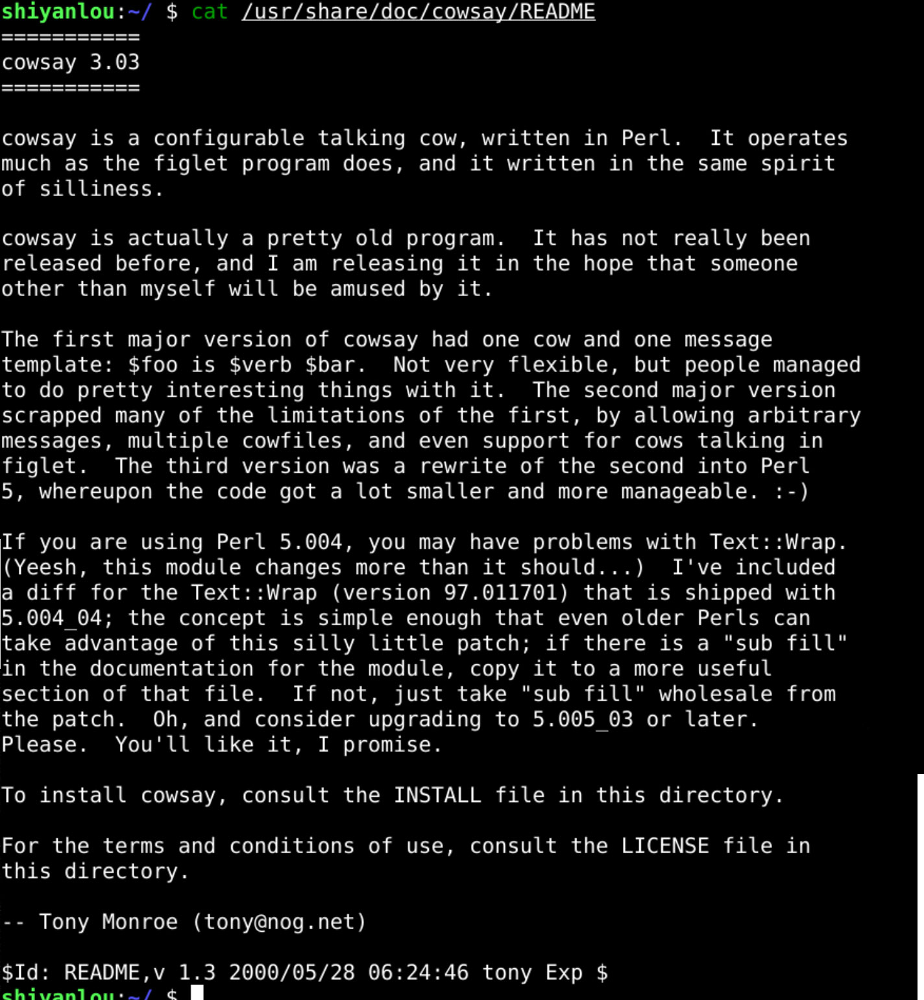
- 2000年的事儿了
- 这个Tony大哥帮助也没有写参数用法
- 那谁知道怎么不换行
搜索
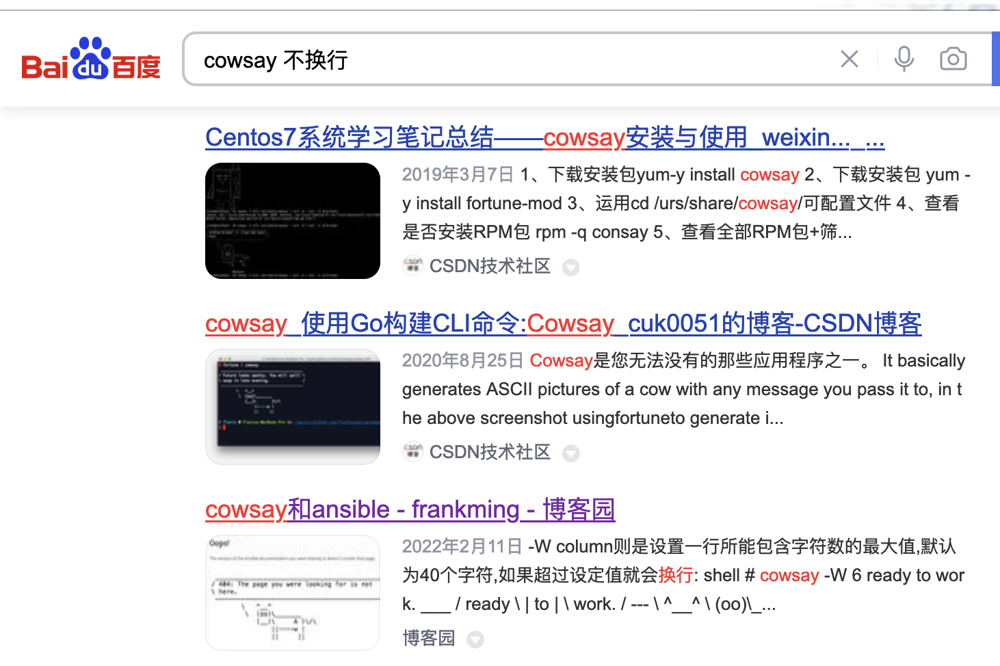
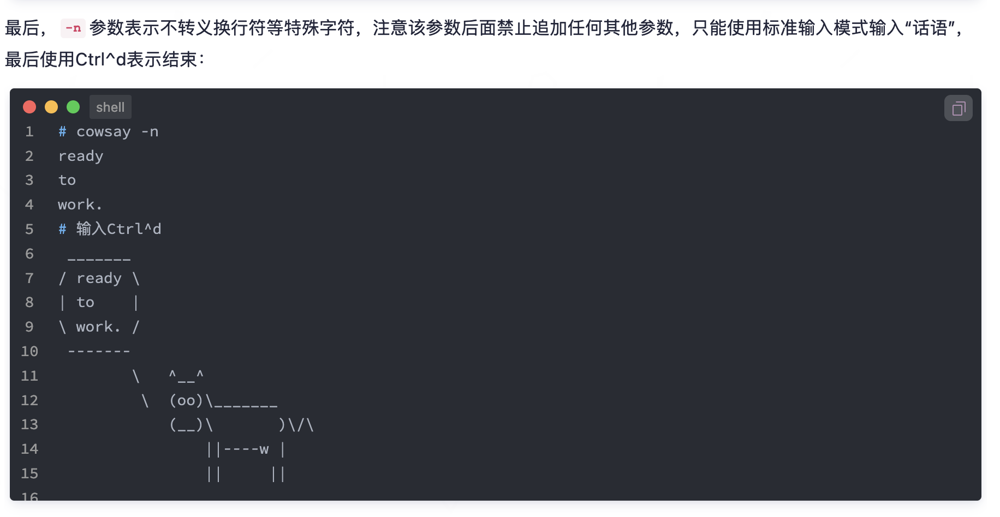
- 不过这个n代表什么呢？
刨根问底
- 把manual恢复回来
sudo minimize
man cowsay
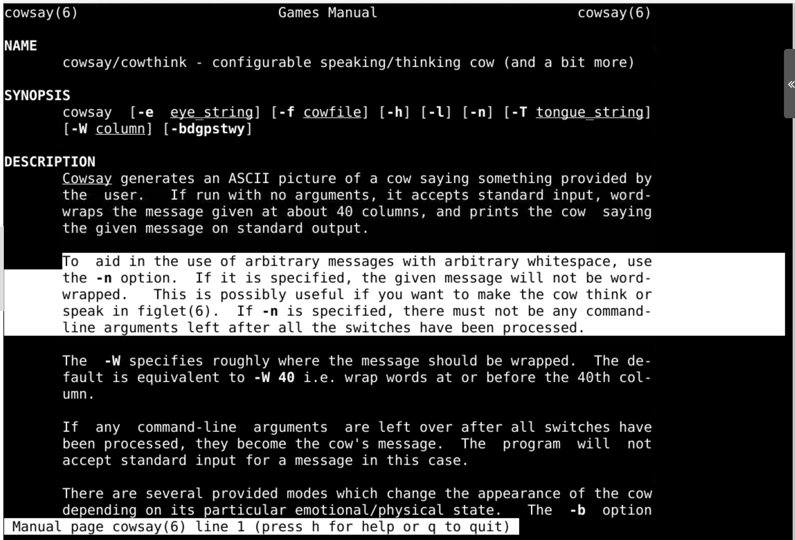
- -n意味着not be word-wrapped
- 就是保留原来的转义字符
\n
总结 🤨
- 这次的 cowsay 可以做签名档
- 可以改变动物类型
- 😚 可以改变动物表情
- 能否把 cowsay 和 figlet、toilet 结合呢？
- 下次再说！👋